Design Process Documentation Template
A template-aligned, research-style design-process document for a simple supplier network planner that helps small teams add partners, see dependency risk, compare choices, run scenario analysis, and choose a better supplier allocation plan.
Abstract
This document records the complete design process followed for Vypaar Saathi, from domain discovery and user understanding to ideation, prototype development, usability reasoning, and final reflection. The core design challenge was to make supplier network optimization understandable for MSME and small procurement users who may not have specialist analytical tools, clean data systems, or time for complex dashboards.
The final concept uses progressive disclosure: the user begins with one guided setup path, enters only relevant business and supplier information, and then receives visible outputs such as dependency risk, comparison scores, simulation results, and a recommended allocation plan. The report connects every major design decision to user evidence, heuristic principles, feasibility limits, and prototype behavior.
Keywords: supplier risk, MSME procurement, user journey, progressive disclosure, Monte Carlo simulation, decision support, network optimization, design heuristics.
The design stages complex analytics behind a simple first-time user flow.
Problem Context
Small procurement teams often hold supplier knowledge in informal conversations, spreadsheets, memory, and recent crisis experience. This makes risk visible only after a delay and turns allocation into a reactive judgement.
Design Objective
The objective is to create a simple guided experience that asks for the right data at the right time, then converts it into dependency visibility, comparison logic, simulation evidence, and a recommended action.
Reader Guide
The document should be read as evidence of process: discovery explains the user problem, ideation explains why this concept was selected, and prototyping explains how usability principles shaped the final screens.
Template summary table
| Project Title | Vypaar Saathi: Simple Supplier Network Planner | ||||
|---|---|---|---|---|---|
| Team Members Names |
Ananya Jha 2504310006 |
Kushal Garg 2501010241 |
Ojus Sood 2501010313 |
Madhav Gupta 2501010252 |
Tushar Khemka 2501010482 |
| % Contribution of Each Member |
20% User research and empathy framing |
20% Prototype direction and product integration |
20% Ideation, affinity mapping, and concept selection |
20% Technical feasibility and testing criteria |
20% Visual documentation and final review |
| Date | May 13, 2026 | ||||
| Submitted To | Reviewer / Instructor / Project Evaluator | ||||
| Submitted By | Ananya Jha, Kushal Garg, Ojus Sood, Madhav Gupta, and Tushar Khemka | ||||
Document Orientation
The report is written as a design-process submission rather than a product brochure. Each phase explains what was observed, what was inferred, how alternatives were compared, and why the chosen interface decisions are suitable for first-time and low-confidence digital users. Visual evidence is included where it supports reasoning, while the written sections make the design logic explicit enough for evaluation.
Understanding the domain, user, and design problem.
Broad Industry / Category
Technology and software for supply-chain decision support, procurement operations, supplier risk management, MSME continuity planning, and data-driven supplier allocation.
Specific Focus Area
Helping MSME and small procurement teams understand supplier dependency, convert fragmented supplier knowledge into usable data, and choose safer, explainable allocation decisions.
Problem Statement
Small procurement and operations teams often rely on scattered spreadsheets, WhatsApp updates, memory, and informal judgement to manage suppliers. They may know a partner feels risky, but they cannot easily connect dependency, lead time, recovery, reliability, cost, capacity, and compliance into one decision model.
Why This Matters
When one supplier carries too much work, a disruption can create stockouts, late delivery, urgent switching cost, customer dissatisfaction, and financial loss. A simple planning tool helps teams act before risk becomes damage by making dependency visible, comparable, and actionable.
Primary Research
The team conducted four semi-structured interviews across low, medium, high, and digitally mature supplier/procurement profiles. The interviews explored how users track suppliers, how they notice risk, how they compare partners, and what makes a recommendation trustworthy.
Evidence Base
Secondary research from supply-chain risk and vendor-onboarding guidance emphasized supplier identification, assessment, monitoring, compliance, continuity planning, and repeatable review cycles. This supported a design direction centered on visibility, decision support, and explainable controls.
Project Evidence
User Journey, Technical Report, Presentation, Prototype Screenshots, and Live Prototype.
{kind=link}
Research Interpretation
The interviews suggested that supplier decisions are rarely made from one clean source of truth. Users often remember supplier behavior informally, check recent communication threads, compare delivery history from memory, and then make an allocation decision under time pressure. This creates a design opportunity: the product should not ask users to become analysts. Instead, it should translate normal business knowledge into a structured decision model and immediately show how each answer affects risk, comparison, or allocation.
Interview Profile Matrix
| Profile | Representative context | Observed behavior | Design implication |
|---|---|---|---|
| Low digital maturity | Small operator using calls, memory, and WhatsApp updates. | Risk is noticed only after delivery failure or stock pressure. | The tool must use simple language and avoid heavy setup. |
| Medium digital maturity | MSME team using spreadsheets, periodic supplier calls, and informal review. | Data exists, but it is stale and not linked to action. | The product must connect every input to visible outputs. |
| High digital maturity | Structured procurement user with basic dashboards or ERP exports. | Comparison is possible, but allocation decisions still require manual judgement. | The product must explain tradeoffs and constraints. |
| Digitally advanced profile | User comfortable with dashboards and scenario planning. | They trust analytics only when assumptions are visible. | Monte Carlo and optimization must show inputs, outputs, and limits clearly. |
Key Insights
- One setup route is clearer than multiple routes leading to the same page.
- Users need plain-language labels before analytical terminology appears.
- Every data field should create a visible downstream output.
- Risk feels actionable when paired with comparison and allocation guidance.
- Prototype evidence should include screenshots, documentation, and live links.
Inputs needed for real optimization
A useful supplier network tool needs company context, product or material category, supplier names, buyer/customer dependency, lead time, reliability, cost, capacity, minimum order constraints, delivery variability, disruption probability, recovery time, payment terms, compliance status, and preferred risk tolerance. These inputs are intentionally collected over time so the user is not overloaded at sign-up.
When data should be requested
Only basic business information belongs in the first walkthrough. Supplier-specific details should appear after the workspace exists, comparison weights should appear when the user enters Pick Best, and uncertainty fields should appear before simulation. This sequencing follows the principle that users answer better when the question is tied to an immediate visible purpose.
The Overloaded Procurement Operator
A business owner, operations manager, or procurement lead who knows suppliers from experience but does not have analyst time or enterprise software access. They need a calm tool that shows who is risky, which partner is better, and how to distribute work more safely.
- Supplier data is fragmented across spreadsheets and memory.
- Risk is hard to explain to others.
- Backup decisions are often reactive.
- Advanced tools feel too complex.
- Clear view of dependency and risk.
- Simple comparison of partner options.
- Scenario-based confidence before decisions.
- Explainable allocation recommendation.
Empathy Map Snapshot
"Which supplier could hurt us if something goes wrong?"
Concerned about disruptions, but overloaded by long forms and complex dashboards.
Spreadsheets, informal notes, supplier calls, and disconnected risk signals.
"Just tell me who is risky and what I should do next."
Research Evidence: Affinity Map
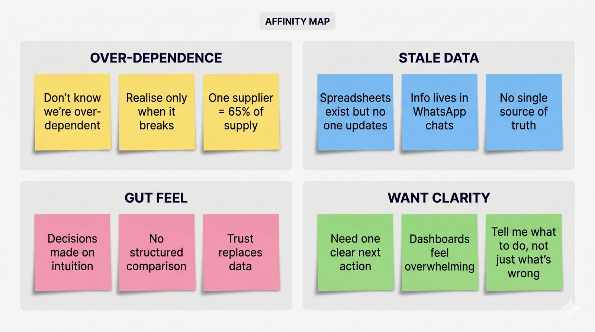
Affinity map from interview synthesis
Interview notes were grouped into four recurring themes: over-dependence, stale data, gut-feel decision making, and desire for one clear next action.
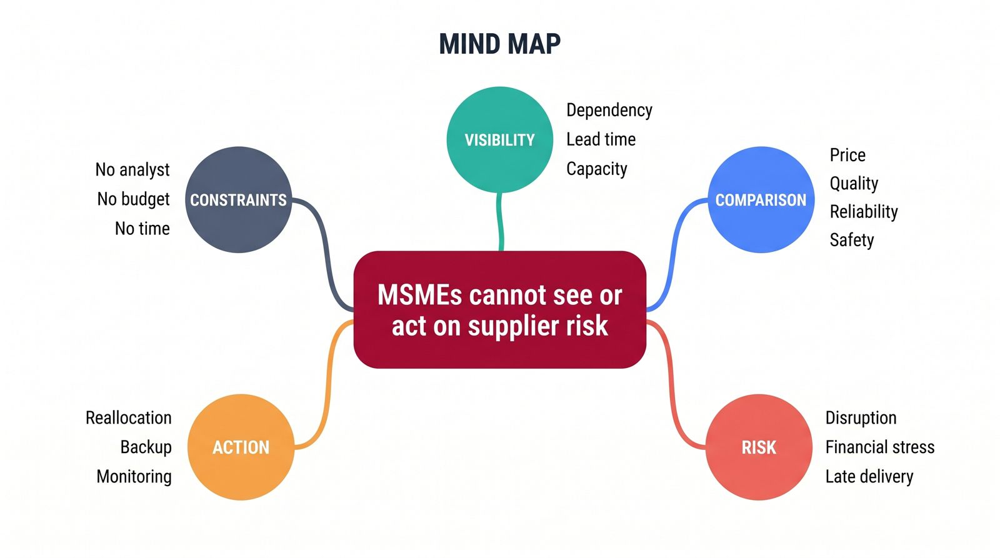
Problem mind map
The map reframed the core problem as MSMEs being unable to see or act on supplier risk because visibility, comparison, risk, and action are disconnected.
Reframing the challenge into a clear product direction.
How Might We Statement
How might we help small procurement teams see supplier dependency and choose safer allocations without analyst-level tools?
Brainstorm / Mind Map Snapshot
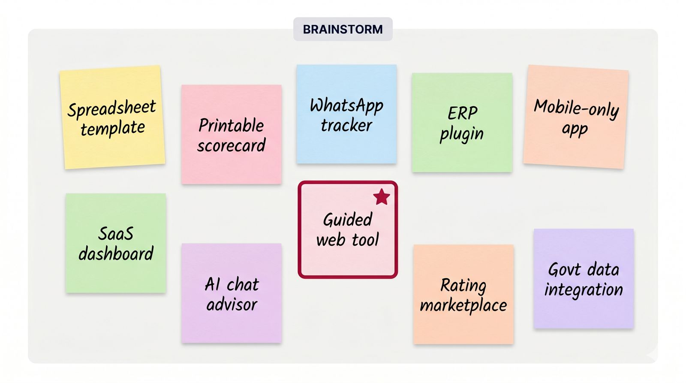
The team compared multiple formats, including spreadsheet templates, printable scorecards, WhatsApp trackers, ERP plugins, mobile-only apps, dashboards, AI advisors, rating marketplaces, and government data integrations. The guided web tool was selected because it balanced feasibility, desirability, and presentation value.
Structured concept refinement
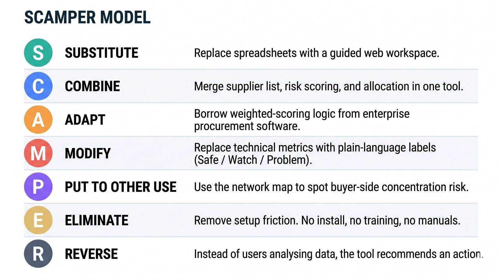
SCAMPER helped refine the concept: substitute spreadsheets with a guided workspace, combine risk scoring and allocation, adapt weighted-scoring logic, modify labels into plain language, eliminate setup friction, and reverse the workflow so the tool recommends an action.
| Concept | Feasibility | Viability | Desirability | Decision |
|---|---|---|---|---|
| Spreadsheet dashboard | High | Medium | Low-Medium | Rejected because it still feels manual and fragmented. |
| Enterprise procurement suite | Low | Medium | Low for first-time users | Rejected because it is too heavy for the project scope. |
| Guided decision tool | High | High | High | Selected because it balances simple onboarding with meaningful analytics. |
Selected Idea & Reason
Vypaar Saathi was selected because it can demonstrate the full decision journey without overwhelming the user. It starts with a guided workspace setup, then turns supplier data into dashboards, network maps, comparisons, Monte Carlo scenarios, and a practical allocation recommendation. Compared with static scorecards or spreadsheets, it is more desirable because it provides immediate feedback. Compared with ERP-style solutions, it is more feasible for a prototype and easier for first-time users to understand.
Rationale for the Selected Direction
The selected concept is not simply a dashboard. It is a guided decision environment. This distinction matters because the target user may understand their business deeply but may not express that knowledge in analytical terms. The design therefore converts everyday concepts such as “late supplier,” “main supplier,” “backup supplier,” “cost pressure,” and “urgent order” into computable fields. The prototype can then demonstrate professional analytics while still feeling usable to a non-technical user.
Building the active prototype and checking whether the flow works.
Concept Name
Vypaar Saathi
Key Features
- Guided workspace creation with one question at a time.
- Supplier and buyer data entry with operational fields.
- Network map for supplier and buyer relationships.
- Comparison tool with adjustable decision weights.
- Monte Carlo simulation for uncertainty and risk exposure.
- Best Plan optimizer with allocation reasons and constraints.
Tools / Materials Used
HTML, CSS, vanilla JavaScript, D3.js, Chart.js, localStorage, Playwright screenshots, GitHub Pages, visual HTML documentation, and printable PDF styling.
Design Principles Applied
Progressive disclosure, recognition over recall, visibility of system status, user control, error prevention, immediate feedback, explainability, and recoverability.
Principles of design translated into interface decisions
Prototype Architecture in Plain Terms
The prototype stores the user's workspace data locally in the browser, then reuses the same data across multiple decision views. The dashboard summarizes readiness and risk, the map explains relationships, Pick Best compares suppliers through weighted criteria, Risk + Simulation shows uncertainty through repeated scenario trials, and Best Plan converts the model into an allocation recommendation. This makes the prototype feel continuous: the user does not enter data for decoration, but for a visible decision outcome.
How to use the prototype from beginning to end
Landing
Open the app and choose Create Workspace.
Sign up
Answer one guided question at a time.
Add info
Add suppliers, buyers, weights, and risk fields.
Analyze
Review dashboard, map, comparison, and risks.
Simulate
Run Monte Carlo scenarios to see uncertainty.
Optimize
Use Best Plan to choose better allocation.
| Testing Area | What Worked | Improvements Needed |
|---|---|---|
| New-user setup | One guided sign-up path reduced confusion. | Run real usability tests with target procurement users. |
| Data entry | Partner input updates many downstream screens. | Add CSV/XLSX import for real supplier master data. |
| Analytics | Simulation and optimization make the project feel professional. | Calibrate models with historical delivery and disruption data. |
| Documentation | Presentation, design docs, and screenshots support evaluation. | Add final user quotes after live testing. |
How optimization is represented
The prototype presents optimization as a constrained recommendation rather than a mysterious black box. Supplier options are compared using cost, lead time, reliability, capacity, dependency, and disruption assumptions. Simulation results communicate uncertainty, while the Best Plan view explains why a suggested allocation is safer or more balanced.
Why the tool explains itself
Users are unlikely to trust automated recommendations if the reasoning is invisible. Therefore, each analytical screen includes visible assumptions, labels, and plain-language reasons. This supports trust calibration: users can accept the recommendation, adjust inputs, or challenge the model without feeling trapped by it.
Iteration Notes from User Understanding
The most important design iteration was simplifying the first-time path. Early versions had two setup routes that moved toward the same data page. Based on user-understanding concerns about cognitive load, the final design uses one large sign-up walkthrough, then sends users to Add Info for supplier details. This follows the design principle that one user goal should have one obvious route.
Active Link to the final prototype
Snapshots for complete prototype
The following screenshots document the complete prototype journey. They are included as evaluation evidence, not decoration: each screen shows how the product reduces cognitive load, connects user input to visible output, and preserves a simple route through increasingly advanced supplier-network decisions.
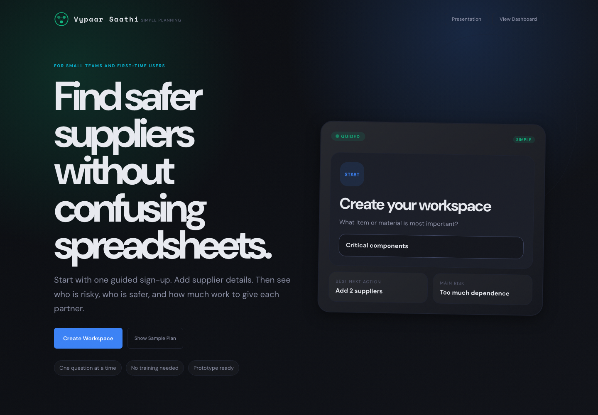
Landing Page
The landing page presents one dominant action: create the workspace. This prevents a first-time user from choosing between multiple similar entry routes and establishes the prototype as a guided helper rather than a complex analytics dashboard.
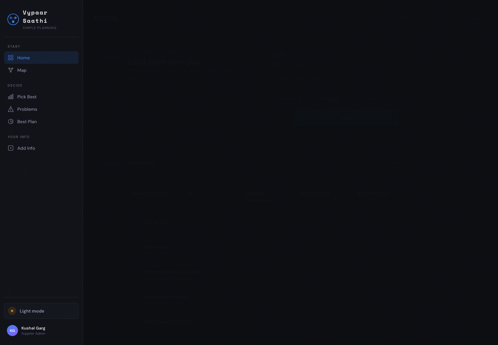
Guided Sign-up
The walkthrough asks one question at a time, uses plain language, and shows progress. This follows recognition-over-recall and error-prevention principles because the user does not need to understand optimization before beginning.
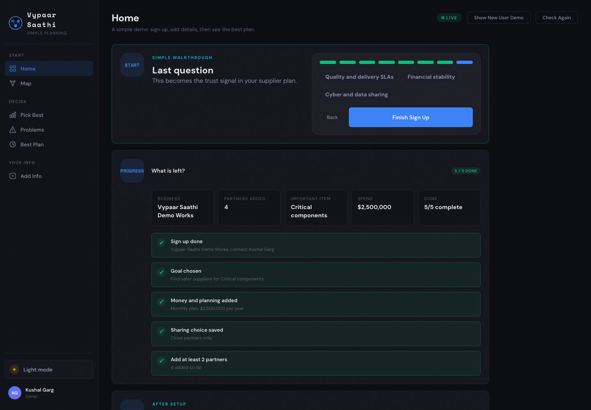
Dashboard Ready
The dashboard confirms that the workspace is ready and turns setup data into visible summaries. KPIs, readiness cues, and next actions make the system status visible and reassure the user that their entered data has value.
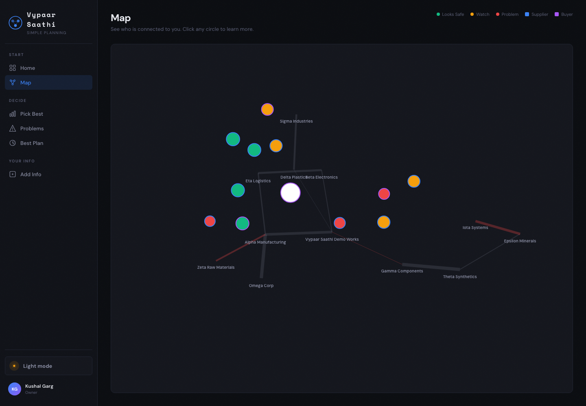
Network Map
The network map translates supplier and buyer relationships into a visual structure. It helps users see dependency, concentration, and exposure patterns that are difficult to understand from a spreadsheet alone.
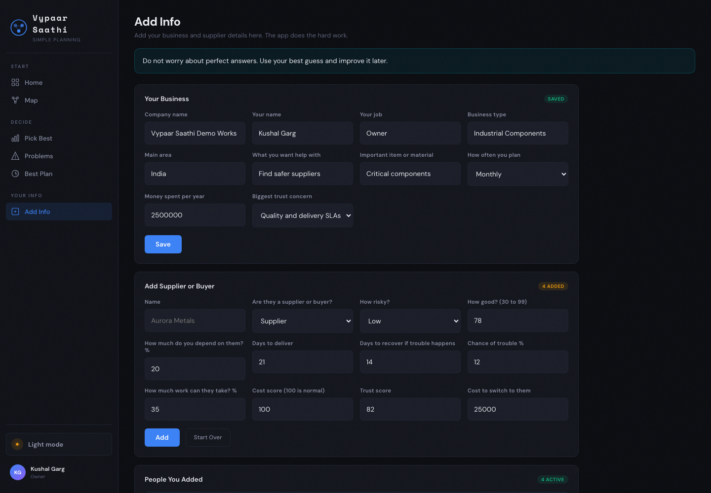
Add Info
The Add Info area separates profile details, supplier data, sharing controls, and correction options. This keeps data entry purposeful because each field supports later comparison, simulation, or allocation outputs.
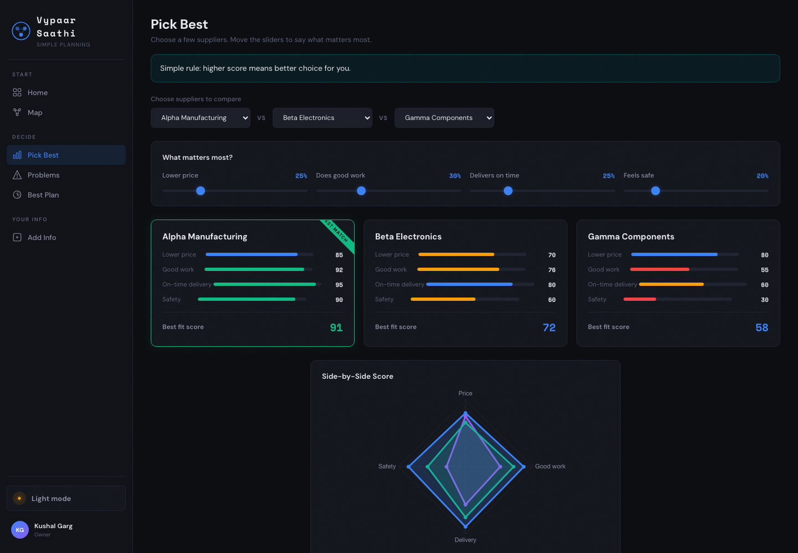
Pick Best
Pick Best exposes the tradeoff logic behind supplier selection. Adjustable weights allow users to compare cost, reliability, lead time, and other factors without losing control over what matters most to their business.
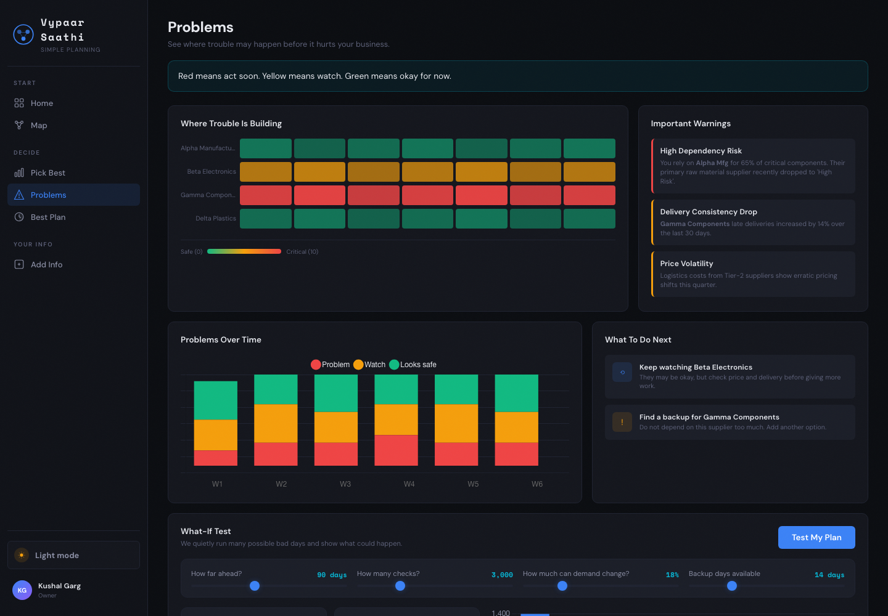
Risk + Simulation
The simulation screen demonstrates uncertainty rather than pretending the answer is fixed. Monte Carlo-style outputs help communicate best, likely, and risky outcomes in a way that supports planning conversations.
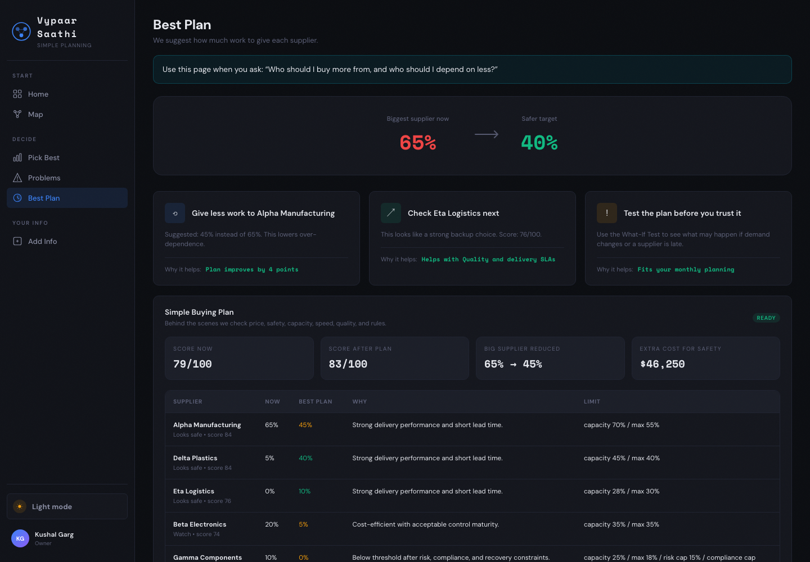
Best Plan
The Best Plan view converts analysis into action by recommending an allocation and explaining the reason. This final step is important because users need a decision, not only charts, after entering supplier data.
Prototype Evidence Summary
Taken together, the screenshots demonstrate a complete end-to-end journey: entry, guided setup, dashboard readiness, network visibility, data correction, weighted comparison, uncertainty simulation, and final optimization. The important design decision is continuity. A user should feel that every screen belongs to the same task and that the system is moving them toward a decision. This is why the prototype avoids separate disconnected tools and instead presents supplier planning as one guided workflow.
Conclusion, learning, impact, and next steps.
The project showed that a complex topic like supplier network optimization can become understandable when the experience is staged carefully. The biggest learning was that simplicity does not mean removing capability. It means asking for the right data at the right time, then showing a useful output immediately. The final prototype connects onboarding, supplier data, risk visibility, comparison, simulation, and allocation into one coherent journey.
- One setup route replaced duplicated onboarding paths.
- Eight prototype screenshots document the full user journey.
- GitHub Pages deployment makes the prototype available to anyone.
- Design, technical, presentation, and template-based documentation are complete.
- Every key input changes at least one downstream view.
Future Scope
The next version should support spreadsheet import, supplier master-data templates, historical delivery uploads, user-role permissions, alerts for dependency thresholds, and exportable recommendation reports. The optimization model can also be calibrated with real delivery variance, disruption frequency, supplier capacity bands, and category-specific constraints. These additions would move the prototype from a strong demonstration artifact toward a practical decision-support tool for small teams.